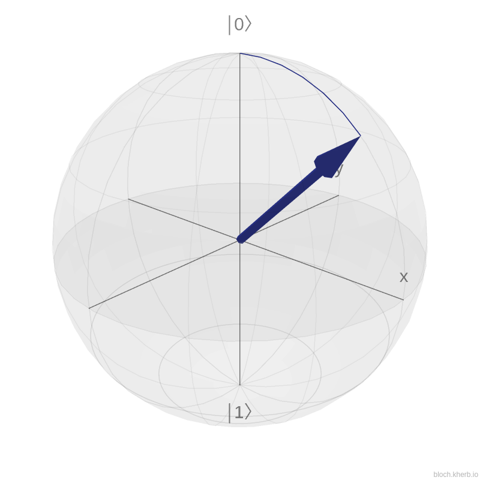
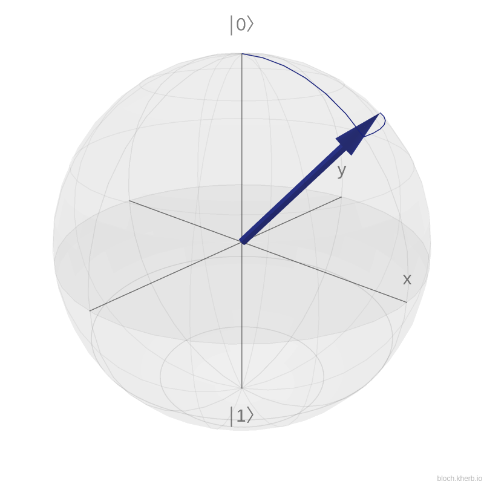

Creating a Quantum toolbox
-
At this point, we have shown how to implement a simple circuit with two types of gates
-
Nonetheless, with this two gates, we can't model complex circuits
-
We need something more universal
Introduction to the Bloch Sphere¶
-
All states of a qubit \(|\psi\rangle\) can be drawn on the surface of an sphere. We can show it by going back to the definition of a single qubit: \(|\psi\rangle = \alpha|0\rangle + \beta|1\rangle\)
-
We know that \(\alpha, \beta \in \mathbb{C}\) which means that \(\alpha=r_1e^{i\gamma_1}\) and \(\beta=r_2e^{i\gamma_2}\)
-
By Observing that \(|\alpha|^2 + |\beta|^2 = r_1^2 + r_2^2 = 1\) and \(0\leq r_1 \leq 1\), \(0\leq r_2 \leq 1\), we can therefore use the following change of variable: \(r_1=cos(\frac{\theta}{2})\) and \(r_2=sin(\frac{\theta}{2})\)
-
We can simplify this expression by noting that \(|\psi\rangle\) can be multiplied by any complex number or global phase \(z\) with \(|z|=1\) without changing its state
-
Let's take \(z=e^{-i\gamma_1}\) as global phase:
- With \(\theta\) and \(\sigma\), representing respectively, the polar angle and an azimuthal angle.
  $$ \theta=\frac{\pi}{4};\sigma=0 \hspace{5cm} \theta=\frac{\pi}{4};\sigma=\frac{\pi}{4} $$
Warning
If you did not already guess it, the Pauli X, Y and Z gates are rotations around their respective axis. The X gate transform \(|0\rangle\) to \(|1\rangle\) which corresponds to \(\pi\) rotation
-
More general rotation operators are generated by exponentiation of the Pauli matrices, i.e., \(e^{iAx} = cos(x)I+isin(x)A\)
- The rotation around the \(X\) axis: \(R_X(\theta)=e^{-i\frac{\theta}{2}X}=\begin{pmatrix}cos\frac{\theta}{2} & -isin\frac{\theta}{2} \\\\ -isin\frac{\theta}{2} & cos\frac{\theta}{2}\end{pmatrix}\)
- The rotation around the \(Y\) axis: \(R_Y(\theta)=e^{-i\frac{\theta}{2}Y}=\begin{pmatrix}cos\frac{\theta}{2} & -sin\frac{\theta}{2} \\\\ sin\frac{\theta}{2} & cos\frac{\theta}{2}\end{pmatrix}\)
- The rotation around the \(Z\) axis: \(R_Z(\theta)=e^{-i\frac{\theta}{2}Z}=\begin{pmatrix}1 & 0 \\\\ 0 & e^{i\theta}\end{pmatrix}\)
Implementing the rotation gates¶
Rotations gates
- Implement the 3 Rotation gates \(R_x\), \(R_y\) and \(R_z\)
- To test the rotation gates, set the variable
SOURCE_FILESas followsset(SOURCE_FILES src/test_rxryrz.cpp src/kernels.cpp src/blochSphere.cpp)in the CMakeLists.txt file
Building and the code
- You should see the following on your screen:
- Add the following code in the
void rx(...)function body
- Add the following code in the
void ry(...)function body
- Add the following code in the
void rz(...)function body